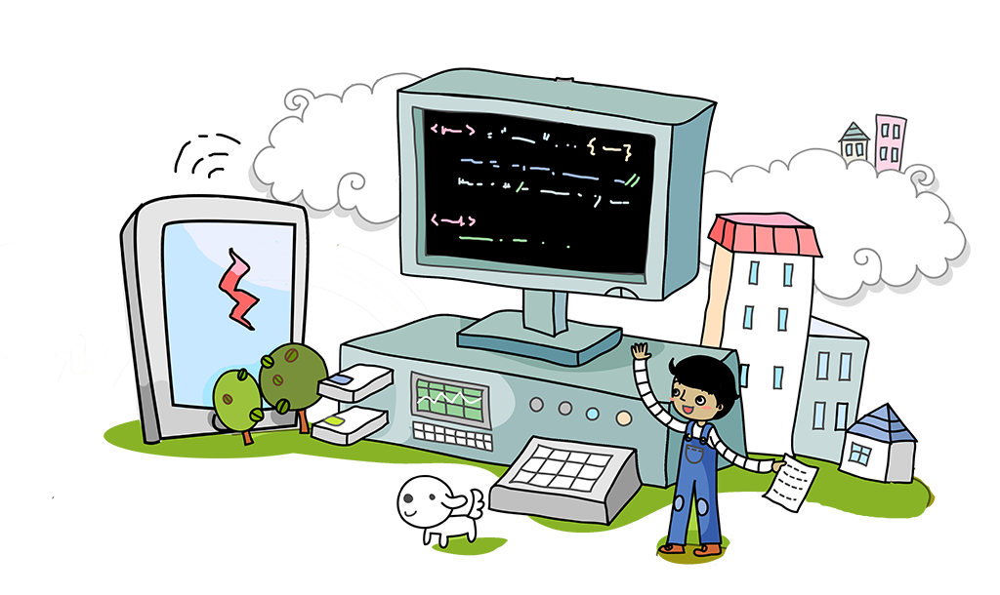
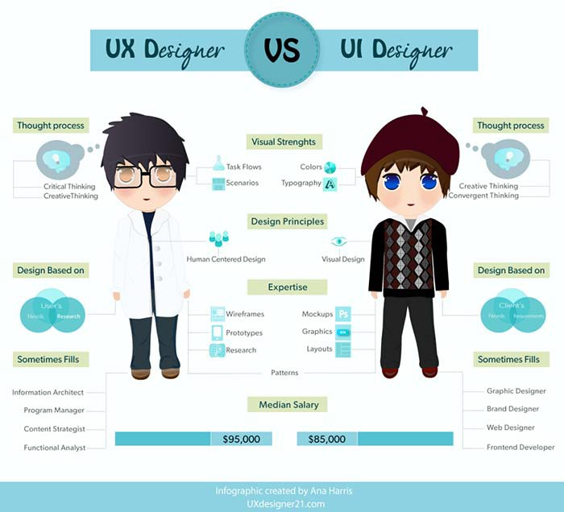
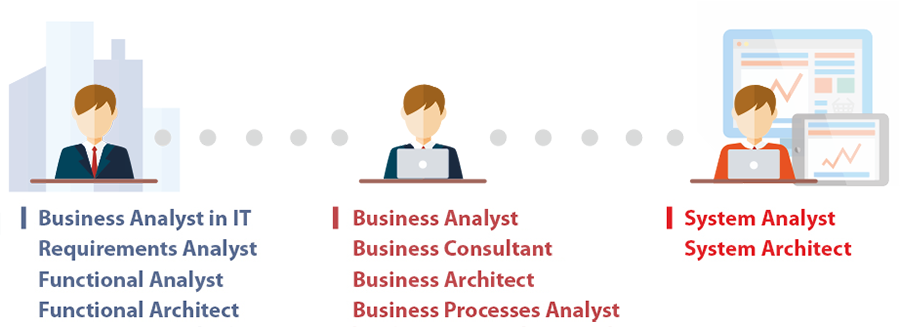

Bagi kamu yang masih kuliah mungkin pernah berpikir kira-kira saat sudah lulus mau kerja dibidang apa? Tentunya dengan berbekal sarjana Informatika kamu ingin mendapatkan perkerjaan yang sesuai dengan gelar sarjana kamu. Ada banyak perkerjaan yang berlatarbelakang IT yang bisa diambil dan mereka mensyaratkan kita untuk memiliki skill tertentu. Artikel ini merangkum beberapa pekerjaan yang berlatarbelakang IT bagi kamu yang masih bingung dan sedang mempersiapkan untuk menhadapi dunia kerja.
1. System Administrator
Seseorang yang bertugas untuk bertanggung jawab untuk menjaga konfigurasi dan keamanan sistem operasi dari sebuah komputer, khususnya komputer multi-pengguna seperti komputer server. Untuk menjadi seorang System Administrator kita harus mempunyai pengetahuan dasar tentang semua aspek Linux atau Unix seperti Solaris atau BSD dan disarankan mempunyai pengalaman mengadministrasi server dan mempunyai sertifikasi yang relevan.Karena hal itu akan membuat perusahaan lebih percaya terhadap kinerja anda.Gaji seorang System Administrator diperkirakan sekitar 5 Juta perbulan menurut myjobstreet.
2. Web Developer

Web Developer merupakan salah satu pekerjaan yang sangat populer didunia IT,Web Developer dibagi menjadi 3 divisi yaitu Frontend Developer,Backend Developer, dan Fullstack Developer.
Frontend Developer bertugas untuk menyajikan interface kepada user atau bisa dibilang sebagai seseorang yang mengatur tampilan suatu Web.Untuk menjadi seorang Frontend Developer kita harus bisa menguasai HTML,CSS,Javascript dan jika kita bisa menguasai berbagai Framework CSS dan juga Javascript maka itu akan membantu pekerjaan seorang Frontend Developer.
Backend Developer bertugas untuk pengolahan data di database dan mengurusi semua kebutuhan dibagian server.Untuk menjadi seorang Backend Developer minimal kita harus bisa menguasai PHP,Laravel, dan Python.Jika kalian bisa menguasai bahasa pemogramman maka itu merupakan nilai lebih jika kalian mendaftar ke sebuah perusahaan.
Fullstack Developer mempunyai tanggung jawab untuk mengelola data di database dan menyajikan interface kepada user atau bisa dibilang bisa Frontend dan juga bisa Backend Developer.Dan gaji untuk seorang Web Developer berkisaran 5 Juta perbulan menurut myjobstreet.
3. Game Developer dan Game Desainer

Game developer merupakan salah satu perkerjaan yang menarik jika ingin berkarya dengan game. Untuk pengembangan game 3D menggunakan game engine seperti Unity, Unreal, dan Panda 3D. Pemograman JavaScript dan C# untuk Unity, Unreal menggunakan bahasa pemograman C++ dan Panda 3D mengunakan Python dan C++.Dan untuk pengembangan game 2D bisa menggunakan game engine seperti Game Maker Studio 2, Unity, RenPy, ink dan menggunakan bahasa pemograman seperti Python pada RenPy, Unity menggunakan JavaScript dan C#.
Selain Game developer ada juga yang dikenal dengan Game designer yang bertugas untuk merancang sebuah karakter didalam game dan perannya.Dan gaji untuk seorang Game Developer sekitar 1,6 miliar pertahun dan untuk seorang Game Desaigner sekitar 700 Juta pertahun menurut idntimes.com.
4. Mobile Apps Developer
Mobile Apps Developer merupakan orang yang mengembangkan aplikasi di smartphone kita. Pengembangan aplikasi mobile pada umumnya terbagi dari yaitu Android dan iOS secara native dan untuk cross-platfrom terdiri dari ReactNative, Ionic, Xamarin dan NativeScript.Pengembangan aplikasi Android native menggunakan bahasa pemograman Java atau Kotlin sedangkan Apple menggunakan Objective-C atau Swift.Dan gaji seorang Mobile apps developer sekitar 5 Juta perbulan menurut id.indeed.com.
5. Database Administration
Jika kalian menyukai pekerjaan yang berurusan dengan database maka DBA mungkin akan cocok karena pekerjaan ini mempunyai tanggung jawab untuk mendefinisikan pola struktur database,mendefinisikan struktur penyimpanan dan metode akses.Beberapa skill yang harus dikuasai oleh seorang DBA seperti MS Acces , SQL Server, Foxpro, Oracle DBMS, Paradox.Dan gaji seorang DBA sekitar 5 Juta perbulan menurut myjobstreet.
6. Security Engineer
Seorang Security Engineer sangat dibutuhkan oleh perusahaan-perusahaan yang semakin besar.Dikarenakan mereka bertugas untuk mengamankan data sebuah perusahaan,menkonfigurasi firewall, melakukan pentest, memperbarui security dan menjaga sehingga tidak terjadi serangan dari para hacker yang bisa membuat kerugian bagi perusahaan.Dan jika ingin menjadi seorang Security Engineer tentunya kita harus mempunyai keahlian yang berhubungan dengan keamanan sistem, terbiasa dengan Linux dan bisa melakukan konfigurasi server, terbiasa menggunakan Tools pentest seperti Netsparker, Acunetix, Kali Linux, Wireshark.Gaji seorang Security Engineer sekitar 13 Juta perbulan menurut myjobstreet.
7. Hardware Engineer
Merupakan perkerjaan di industri mikroprosesor dan integrated circuit yang melibatkan proses fabrikasi mikroelektronika dan desain arsitektur mikroprosesor.Untuk menjadi Hardware Engineer tentunya kita harus bisa menguasai arsitektur komputer dan cara kerja mikroprosesor / mikrokontroler, menguasai bahasa pemprograman Assembly dan atau C/C++, dan menguasai prinsip kerja komunikasi data baik secara parallel, serial (COM/USB).Gaji seorang Hardware Engineer sekitar $84,651 pertahun menurut payscale.com.
8. UI/UX Designer
Bagi kalian yang sangat suka mendesign ataupun menggambar mungkin pekerjaan ini sangat cocok untuk dicoba.UI adalah bagaimana suatu produk yang kita buat terlihat seperti apa yang bisa dilihat oleh mata atau bisa dibilang untuk mengatur penampilan interface dari segi warna,layout,dan font. Sementara itu UX adalah proses untuk membuat produk yang telah kita buat menjadi mudah untuk digunakan dan tidak membingungkan pengguna.Untuk menjadi seorang UI/UX designer kita harus terbiasa memilih perpaduan warna yang nyaman bagi user dan harus detail untuk melihat hasil yang di pasarkan ke produksi baik dari sisi font, warna, gambar.Gaji seorang UI/UX Designer sekitar $90,697 pertahun menurut glassdoor.com.
9. System Analyst
System Analyst memiliki tanggung jawab mendefinisikan kebutuhan user, menyusun solusi yang efektif, dan mengawal masa transisi awal penggunaan sistem.System analyst bisa pula menjadi perantara atau penghubung antara perusahaan penjual perangkat lunak dengan organisasi tempat ia bekerja.Untuk menjadi seorang System Analyst kita harus bisa menampilkan hasil analisis melalui berbagai macam tools seperti MS Excel, Visio dan mampu menggunakan bahasa pemograman agar dapat berkomunikasi dengan engineer baik di mobile maupun web.Gaji seorang System Analyst sekitar $64,685 pertahun menurut payscale.com.
10. Network Engineer
Pekerjaan ini sepertinya cocok untuk kalian yang senang dengan masalah jaringan.Perkerjaan ini mempunyai tanggung jawab untuk mendesign dan membangun infrastruktur jaringan baik LAN maupun WAN, memberikan solusi terbaik dalam hal infrastruktur jaringan baik dalam hal peralatan yang digunakan, efisiensi, reliability, security dan aspek-aspek lain yang terkait.Gaji seorang Network Engineer sekitar $72,946 pertahun menurut glassdoor.com.
Referensi :
Mungkin hanya itu yang bisa saya sampaikan dan semoga bermanfaat untuk kalian semua.